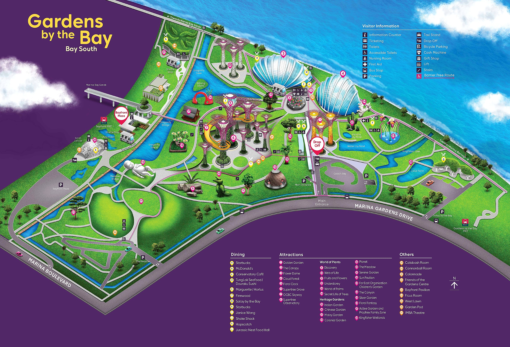

OFFICIAL STYLE BAY SOUTH MAP
Bay South visitor map
The illustrated Gardens by the Bay — Bay South map with numbered attractions, dining and visitor facilities.


YOUR GARDEN JOURNEY STARTS HERE
Explore the Gardens
Select a location on the real-world map to reveal its story, visitor information and ticket details.
LIVE SATELLITE MAP
Hover or tap a marker to explore
Ticketed attractions
Outdoor spaces
Hover a pin — the guide panel shows a real photo & details.
See what the Gardens
has to offer
VIEW ALL ATTRACTIONS
MOMENTS TO REMEMBER
Garden highlights
A few extraordinary places to add to your journey.
MAKE THE MOST OF YOUR DAY
Plan a visit
to remember.
Check opening hours, admission rates and visitor information before you arrive.
Plan your visit ↗
LOCATION
18 Marina Gardens Drive
Singapore 018953
Singapore 018953
GARDEN HOURS
Outdoor gardens generally
5.00am – 2.00am
5.00am – 2.00am
GETTING HERE
Bayfront MRT
CE1 / DT16
CE1 / DT16
Ticket prices shown are indicative Singapore-dollar rates for non-residents, based on official information available when this demo was prepared. Prices, packages, exhibitions, operating hours and maintenance closures can change. Always confirm with Gardens by the Bay before visiting.